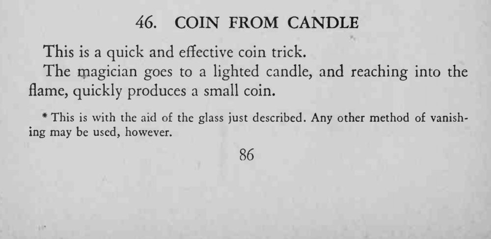
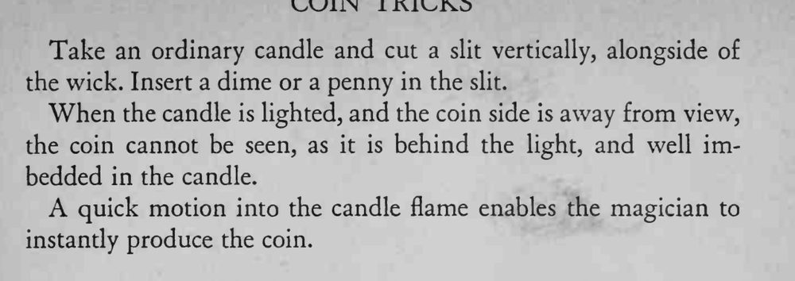

魔术师走到点燃的蜡烛前，把手伸进火焰里，一下就取出一枚小硬币。
藏币的一面必须背光，蜡烛要够粗，缝口在取币时才不会露馅。


This is a quick and effective coin trick. The magician goes to a lighted candle, and reaching into the flame, quickly produces a small coin. *This with the aid of the glass just described. Any other method of vanishing may be used, however. Take an ordinary candle and cut a slit vertically, alongside of the wick. Insert a dime or a penny in the slit. When the candle is lighted, and the coin side is away from view, the coin cannot be seen, as it is behind the light, and well imbedded in the candle. A quick motion into the candle flame enables the magician to instantly produce the coin.